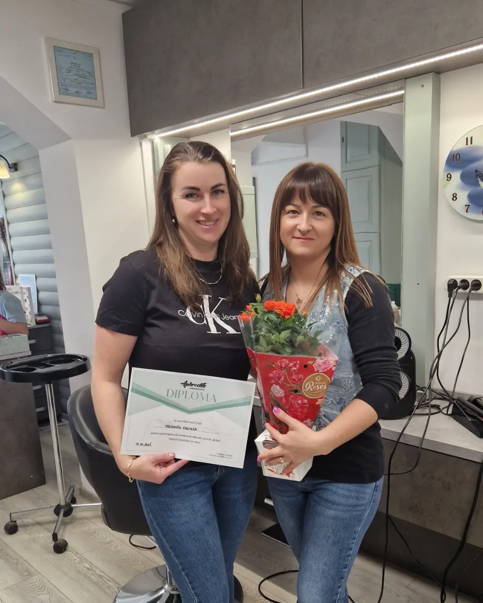
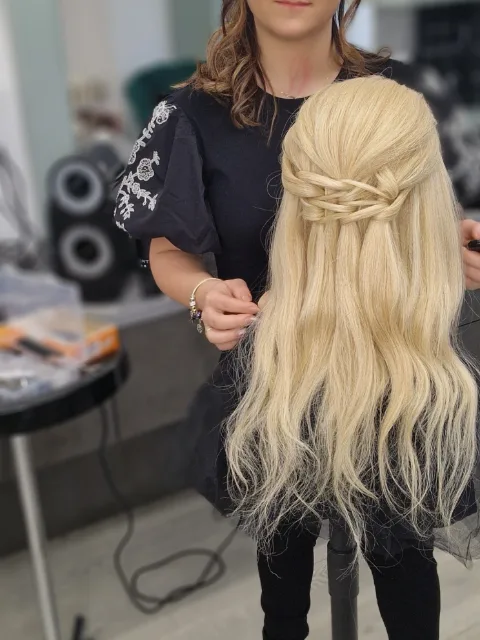
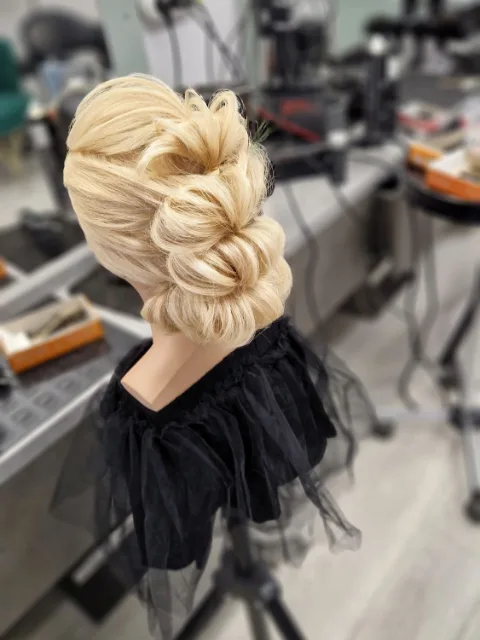
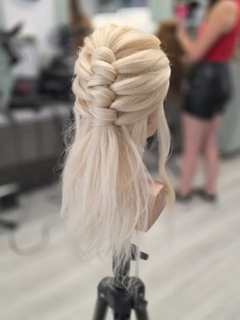
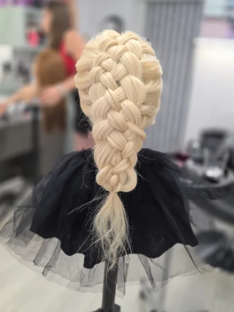
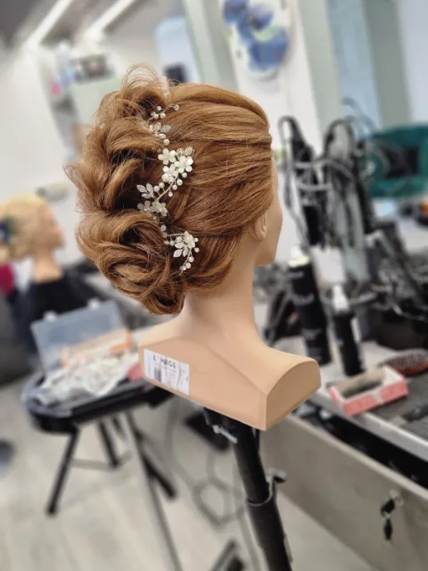
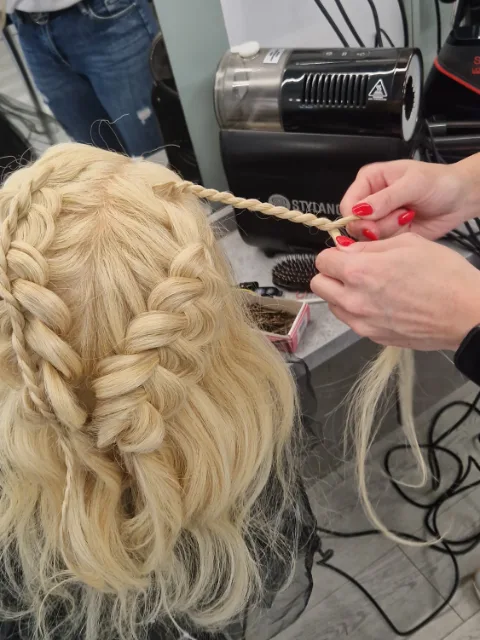
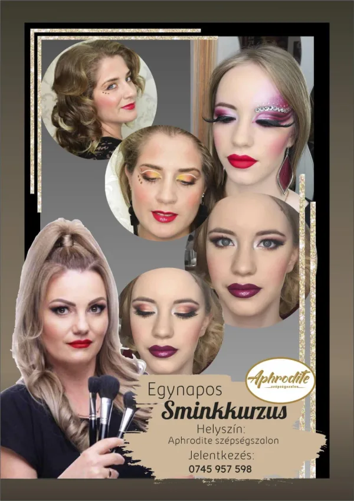

Curs de coafură
Aphrodite nu doar practică meseria — o și predă. De la cursul de o zi la formarea de un an, cu Ciubotaru Katalin.

Ciubotaru Katalin
„Atât ca coafeză, cât și ca instructor, consider importante transmiterea cunoștințelor, dezvoltarea continuă și ca dragostea pentru meserie să ajungă și la alții.”
Coafeză de douăzeci de ani. Și-a început cariera la Salonul Aphrodite, lucrează aici de atunci și se perfecționează continuu — participă la cursuri, învață tehnici noi.
Ce vei învăța
Învățarea are loc în salon, lângă lucrări reale — începi pe manechin și continui pe clienți.
Bazele
Tuns, vopsit și uscat — munca de zi cu zi din salon, pe care se construiește tot restul.
Coafuri de ocazie
Cocuri, împletituri, valuri: coafuri de mireasă și de ocazie.
Tehnici complexe
O privire în lumea balayage-ului și a șuvițelor, cu tranziții fine.
Taxa este în euro, conform listei de prețuri a salonului. Despre detalii și începerea cursului te informează personal Katalin.
Astăzi lucrează aici
Cele două coafeze tinere ale echipei au învățat un an alături de Katalin — astăzi își primesc propriii clienți în salon.

„Simt că am găsit drumul care mi se potrivește cu adevărat.”Sebestyén Zsuzsa
S-a înscris în toamna lui 2024 și a învățat un an alături de Katalin: vopsit, tuns, coafuri de ocazie, o privire în lumea balayage-ului și a șuvițelor.

„Îmi place să văd cum o coafură reușită îi dă clientului încredere și bucurie.”Kele Gabriella
A început meseria în 2025 și a petrecut un an în salon alături de Katalin. Astăzi se ocupă de tuns, vopsit, șuvițe și tehnica balayage.
Totul începe pe manechin







Poți învăța și de la Klára
Gotthárd Klára ține un curs de machiaj de o zi și cursuri individuale de machiaj — ca tehnicile învățate pentru ocaziile importante să-ți iasă ușor și acasă. Despre cursuri te informează personal.